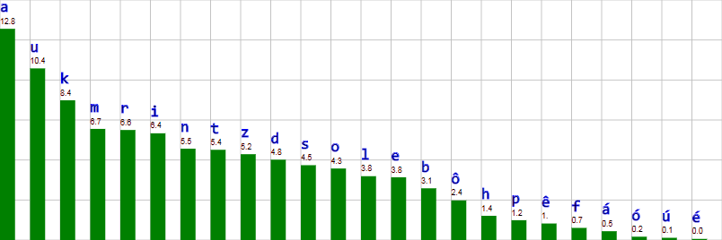
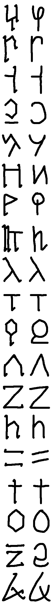
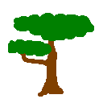
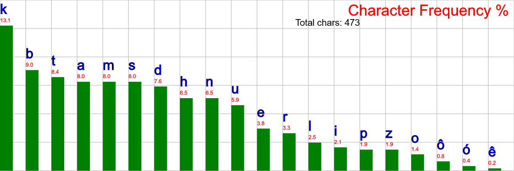
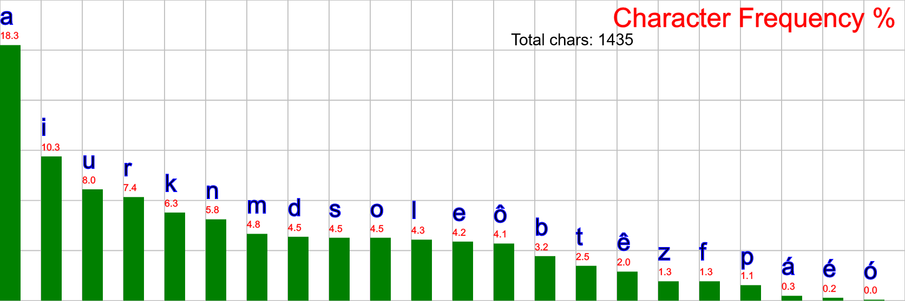
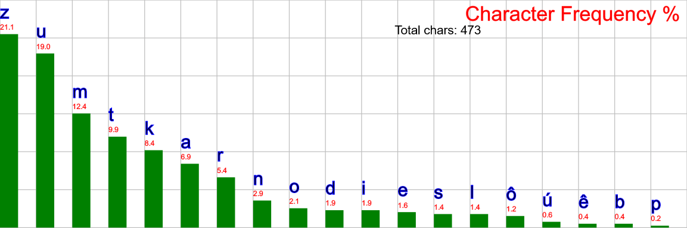

Eremoran Language
Eremoran (Eremoran: Eremorôm IPA: [ə.ʀəˈmɔ.ħom]) is the language spoken in Eremor.
Proto-Eremo-Numoran
The following table is constructed for Proto-Eremo-Numoran:
| Labiovelar |
Alveolar |
Palatal |
Velar |
| *m |
*n |
|
| *b |
*t *d |
*tʃ |
*k *g |
| *ɸ *β |
*s |
*ʃ |
*x |
|
*l *r |
|
PEN had 15 consonants and 7 vowels.
There was likely no /p/ in Proto-Eremo-Numoran: it is totally absent in Numoran and many of the Eremoran words containing /p/ are known loans.
In numoran, two of these vowels are lost, and /ʃ/ merged with /tʃ/.
PEN was a caseless language.
Its parent proto-language, Proto-Muran, however, was a Nominative-Accusative language with eight cases, each of which is still extant in some Muran language.
The word dir evolved from a PEN polite adjective *dir (originally, it could only refer to Humans) which was supplanted by the loan ou, from Pre-Eremoran *po.
This adjective then marked the absolutive and was originally optional, but even by Old Eremoran then became mandatory.
Proto-Muran contained only five vowels.
PEN split *ê and *ô from *e and *o.
The following are known sound changes, arranged roughly from oldest to newest.
From Proto-Eremo-Numoran to Old Eremoran:
- /x[e/ɛ]/ > /a/
- /x/ > /k/
- /f s/ > /h/ word-initially
- inter-voiced /s/ > /z/ and /ss/ > /s/.
- /ɸ/ > /f/.
- /β/ > /b/.
- /i/ > /j/ between a consonant and a vowel.
- /sj zj tj dj/ > /ʃ ʒ tʃ dʒ/.
- /ʃ ʒ tʃ dʒ/ > /s z ts dz/.
- Unstressed vowels reduced to schwa.
- /g/ > /k/.
From Old Eremoran to Eremoran (ie. these sound changes were recorded):
- /ts/ > /s/.
- /h/ > /Ø/.
- /r/ > /ʀ/.
Comparison between Proto-Eremo-Numoran, Eremoran, and Numoran:
| English |
Eremoran |
Numoran |
Proto-Eremo-Numoran |
| beer |
/ˈbɔħ.nəkt/ |
/ˈbweɾ.naxt/ |
/ˈβɔr.naxt/ |
| hammer |
/ˈbɔ.lənt/ |
/ˈbwe.ʎent/ |
/ˈβɔ.lɛnt/ |
| health |
/ˈɛn.lom/ |
/ˈsjen.lon/ |
/ˈsɛn.lom/ |
| knowledge |
/əˈfe.kəm/ |
/aˈfe.kwen/ |
/aˈɸe.kɔm/ |
| person |
/mɔħ/ |
/mweɾ/ |
/mɔr/ |
| red |
/əˈʀɛu̯/ |
/eˈɾjew/ |
/ɛˈrɛ.u/ |
| sight |
/sau̯.ʀən/ |
/ˈsjaw.ɾɔn/ |
/si.aˈu.rɔm/ |
| that |
/ɔ/ |
/swe/ |
/sɔ/ |
Phonology
|  |
Letter frequencies of Eremoran words. |
There are 11 consonants, and 7 vowels in Eremoran. Vowels change quality based on stress.
| Labial |
Alveolar |
Velar |
Uvular |
Glottal |
| m |
n |
|
|
|
| (p) b |
t d |
k |
| f |
s z |
|
|
l |
ʀ |
(h) |
| Writing |
Stressed |
Unstressed |
| a |
ɑ |
ə |
| e |
ɛ |
ə |
| ê |
e |
e |
| i |
i |
ɪ |
| o |
ɔ |
ə |
| ô |
o |
o |
| u |
u |
ʊ |
 |
 |
The primary pronounciation of the rhotic in contemporary Eremoran. |
The usage of /ħ/. |
The following remarks apply to all dialects:
- Stress is on the penult.
- [ə] + non-schwa vowel = non-schwa vowel.
- /l ʀ/ are [ʕʷ ʀʷ] in the coda.
- /n/ is [ŋ] before /k/.
- Syllable structure is (C)(C)V(C)(C).
- Words spelt with <p> are Pre-Eremoran loans. In educated speech, it is pronounced [p], but elsewhere it is [f].
-
In younger speech, voiced stops are often devoiced and voiceless stops are instead aspirated.
Additionally, VN combinations tend to simply nasalize the vowel instead.
- /h/ is silent for most uneducated speakers, although there are some still pronouncing it [h ~ ʔ], primarily in rural areas west of Deftei (Bend-Highbrook Dialect) and those in the upper lake.
The following remarks apply to the capital dialect, the focus of this writing, but not necessarily others:
- /ʀ/ is [ħ] after /a ɔ/ except before front vowels.
- Voiced plosives /b d/ have fricatives as intervocalic allophones [β ð].
The following remark applies to dialects north of Deftei:
- /t d s z/ are palatalized to /tʃ dʒ ʃ ʒ/ before front vowels.
- The e, o, and u vowels merge with a unstressed, and ê, ô, and u (ie. remains unchanged) stressed.
The following remark applies to the Upper Eremoran dialect:
-
A new sound merger is developing where /f b m/ all merge into /m/.
Some speakers have a partial merger, while some may merge all three, such that the words barz, marz, and parz are homophones.
Younger speakers are more likely to possess this merger.
- Note that this means Upper Eremoran can have as few as nine consonants and five vowels
The following remarks apply to the Bend-Highbrook dialect:
- The Bend-Highbrook dialect is the sole dialect to retain the archaic masculine-feminine distinction.
Other dialects use the old masculine as the human noun class.
The feminine was formed like the masculine -r, and was -rre.
By the time of the ending loss, the only audible difference was stress shift and the length of the rhotic, so it is unsurprising it fell into disuse.
Some modern scribes still observe the distinction in writing, but is widely viewed as an archaicism and the practice is quickly vaporizing.
- Some of the older residents remember a time when the eldest residents still used alveolar /r/, so the transition to uvular /ʁ/ there was relatively recent.
- /f/ is instead typically /ɸ/.
Orthography
History
The Eremoran writing system is derived from the logosyllabary of the Pre-Eremorans.
Initially it used it as a syllabary and had complex rules for isolated consonants, but over time scribes stuck to the /a/-set, creating an abjad.
This was then supplemented with vowels, creating a true alphabet.
Letters
The order of the alphabet generally moves from back to front in place of articulation, and from fricatives to plosives to nasals, with unvoiced consonants coming first.
However, liquids were left at the end, then vowels were added, and the loan-letter for /p/ was re-borrowed (compare the symbol for /h/).
| Phoneme |
Carving |
Ink |
| /k/ |
 |
| /s/ |
| /z/ |
| /t/ |
| /d/ |
| /n/ |
| /h/ |
| /b/ |
| /m/ |
| /ʀ/ |
| /l/ |
| /a/ |
| /e/ |
| /o/ |
| /ê/ |
| /ô/ |
| /i/ |
| /u/ |
| /p/ |
Morphology
- Adjectives end in -u- + noun ending, except ho, id(a) and ko, which just has the ending.
- Verbs end in -z.
-
Five noun classes:
- Human - (-r)
- Animate - (-k)
- Neuter 1 (Things that are harvested/broken from their source, used as tools...) - (-t)
- Neuter 2 (Other tangibles, the 'default' class) - (-Ø)
- Intangible - (-m)
Note that there are occasional exceptions to this rule, especially in proper nouns.
- /l/ -> /Ø/ is a "cutesy" sound change.
- Eremoran has productive partial and full reduplication:
- adv. → adv.: (Irr., usually Partial; No longer productive) more specific meaning of an adverb, eg. nen
- adj. → adj.: (Partial) adjective intensifier, eg. erereu 'very red'
- adj. → adj.: (Full) disparaging form of certain adjectives, eg. hoso, idid, koko
- adj. → n.: (Partial) noun possessing a quality, eg. dadal, elelak, kikir
- n. → n.: (Partial) This transformation has two uses:
- Deriving artificial equivalents of natural features, eg. bebekat, lanlant, mimit, mumust, tutut
- Deriving meats from animals, eg. bôbôt, didirat
- s-Reduplication
- Used with certain adjectives of age (marked s-triggering in this dictionary)
- The rhyme of the first syllable is reduplicated and the first syllable's onset becomes s:
- ardo 'wildfire' → tar sarardo 'new wildfire'
- abakt 'table' → muk saabakt 'old table'
Affixes
- -do = diminutive suffix, from dou
- -êr = en. -er, la. -ator
- -kair = like jp -san, a polite suffix for human referents
- -krum = -ology, from krum
-
-ma = rougly analogous to eo. -ujo, -ingo, from PEN *ma
- Denotes plants whence their fruit/nuts came.
- -am = verb -> noun suffix
- -(i)sêm = -ity, -ness, -hood, noun -> noun, from -(i)su + -êr + -m
- -baz = passivizer. Only used in the formation of compounds, never as a verb in the end.
- -(o)boz = intensive. From obo
- -dáukaz = like la. -esco or eo. -igxi. From dáukaz
- -(u)doz = frequentive. From udou
- -fkaz = inchoative. From afkaz
- -kiz = specifies the verb was performed intentionally.
- -kudz = terminative. Used to be a verb by itself, now replaced by balitz and the loanword parz. Related to kudom.
- -(e)laz = diminutive. From elau
- -(i)sêz = noun -> verb; do something relating to the root. From -(i)su + -êr + -z
- -sudôz = like -ify, -ize, ie. causative. From sudôz
- -tônz = defective aspect. From the PEN adverb *tôn + -z, whence modern Eremoran tônu.
- -úbz = specifies the verb was performed accidentally.
- -(i)su = -like, or -ish, noun -> adj.
- -lk = adjective -> adverb suffix
- u- is a non-productive negative prefix, eg. uid "not" from *u- "not" + id "one".
- pu(h)- is a productive negative prefix coming from Pre-Eremoran.
Grammar
- Verbs do not conjugate at all; TAM is formed with special auxillary verbs.
- SOV order is the default, but the presence of the preposition dir effectively allows any order.
- Adjectives (incl. demonstratives and numerals) and genitives precede nouns.
- Adpositions come immediately after the noun they modify.
- Except dir, and sometimes ad, which immediately precede the noun, regardless of any adjectives.
- Eremoran uses double-headed relative clauses.
- eg. Ad abakt roraok numz abakt balitz. = [onto] [table] [cat] [ran] [table] [broke] = The table the cat ran onto broke.
- The topic of the relative clause is always moved to the beginning.
- Adjective use:
- siu môr - "white person"
- simôr - "whiteperson"
- môsir - "something which looks like a whiteperson, but is contextually distinct"
Vocab
Gestures
In addition to its rich system of paralinguistic clicks, Eremoran contains many hand gestures carrying meaning.
Their use is so common among Eremorans that many of the more common gestures are even understood in neighboring cultures.
Since they originated among traders, many of the signs concern commerce.
- Beautiful
- With the dominant hand flat, palm towards the head,
- The hand "scans" the face from top to bottom,
- Then the Good gesture is signed.
- Everything, Everyone
- With the dominant hand centered in front of the person, with the index finger pointing downards,
- "Draw" a circle with the finger.
- Disturbance
- With both hands in fists in front of the person, touching, as if holding a staff horizontally,
- Rotate the non-dominant hand upwards, and the dominant hand downwards, as if to twist the staff.
- Don't Know/Understand
- With the dominant hand in a fist, the same side of the head is knocked twice, about an inch above the ear.
- Fast
- With the non-dominant hand held out about a foot and a half,
- The fingers are snapped while simultaneously raising the hand.
- Gift
- Dominant hand centered in front of speaker, palm up.
- With the non-dominant hand, the palm is "swept" twice.
- Good
- With either hand, held as if grasping a one-inch staff,
- With nails touching the lips,
- The hand is dropped down and fingers splayed.
- Hello
- Single downwards nod of the head.
- Shares all other meanings of the interjection hênlom.
- Here
- Both index fingers pointed down at the ground.
- Know/Understand
- Initially begins identically to the gesture Don't Know.
- Instead, the fist is briefly held about two inches from the head.
- Finally, the air above the hand is "flicked" upwards.
- Write, Receipt, Sign
- With the non-dominant hand flat, palm facing the speaker's head,
- With the dominant index and thumb in a pinch,
- The dominant hand is moved around the palm, as if writing.
- [Question Gesture]
- In tandem with another gesture, the head is tilted towards the dominant side.
- Often, the eyebrows are raised.
Finger-counting is done starting with the dominant thumb, and extending left, as in much of Europe.
Humans are pointed at with all fingers, not just one, as for non-humans.
Important Sets
Numbers
- id
- nasu
- kumku
- babzu
- hanu
- elmnu
- klimu
- triksu
- talsu
- nasanu
- nasanu nasu (or tanasu, from tan + nasu)
- kumkanu
- babzanu
- hananu
- nasananu
- kumkananu
- kumkananu babzanu babzu
- sesu
Colors
- red - ereu
- orange - erekanu
- yellow - kanu
- green - tasu
- cyan - linku
- blue - ulu
- purple - ereulu
- black - usiu
- white - siu
- grey - dalu
- brown - kaspsu
Common Personal Pronouns
In increasing order of politeness:
| Formality |
Gender |
Word |
Etymology |
| Disrespectful |
A |
umobor |
uo- + mo- + uo- + -r |
| A |
utôzdmêr |
utôzdmu + -êr |
| Informal |
A |
umor |
uo- + mor |
| A |
mar |
mat + -r; influenced by mara |
| Neutral |
A |
omor |
o- + mor |
| F |
ôkar |
o- + okar |
| Formal |
A |
omôr |
o- + mo- + o- + -r |
| A |
oker |
o- + ker |
| X |
môk |
mo- + o- + -k |
The reflexive particle mi is often used as a polite circumlocution to avoid pronoun use when one does not know what politeness to use.
Yes-No
| Formality |
Yes |
No |
Etymology |
| Casual |
ok |
dadal |
Eye dialect spelling of holk
from dadal 'ash; dust' |
| Neutral |
holk |
uid |
ho + -lk
u- + id |
| Formal |
hona |
PEN *ɸona |
Intensity Adverbs
| eng. |
ere. |
parity |
| extremely |
hai |
postive |
| rather |
hô |
| somewhat |
huri |
| not very |
tu |
negative |
| not at all |
ban |
Times
| Eremoran |
English |
Terran Equivalent |
Notes |
| rilm |
day |
28.93 h |
- |
| nem |
year |
2 mo 14 d |
| bikém |
two decades |
4 yr 1 mo 7 d |
In Eremoran culture:
| bikém |
Eremoran |
English |
| 0 |
nubêr |
baby, infant |
| 1-2 |
elaêr (F elaôr, iktêr) |
child (girl) |
| 3-4 |
tazedor |
teen, young adult |
| 5+ |
hanbikér |
adult |
| 12+ |
tanasbêr |
elder |
|
Adpositions
| Eremoran |
English |
Latin |
| ad |
at, by, during, for, into, onto, to, towards, until, up to, while |
ad, adusque, apud, dum, gratia, in, ob, pro, super, usque, vorsum |
| bo |
using, with |
per |
| din |
beyond, out of |
clam, clanculum, ex, extra, praeter, trans, uls, ultra |
| dir |
[Absolutive Case Marker] |
| dô |
in, on |
cis, in, intro, secus, super |
| hal |
according to, in accordance with |
cata, iuxta, penes, secundum, specie, vice |
| i |
[Topic Marker] |
| iát |
as opposed to, instead of, in contrast to, rather than |
contra, erga, exadversum |
| ku |
with |
cum |
| kul |
about, around, concerning, near, next to |
circa, circiter, circum, iuxta, prope, re |
| mo |
before, behind |
ante, pone, post, prae |
| nost |
below, under |
infra, sub, subter |
| su |
of |
de |
| tan |
after, in front of |
ante, coram, palam, post, prae |
| uku |
without |
absque, sine |
Full List
- abakt

- Etymology: Proto-Eremo-Numoran *abakt 'board'
- n., 3rd
-
- board, plank
- table
- tablet, map, document
- abask
- Etymology: Proto-Eremo-Numoran *aβasx 'duck'
- n., 2nd
-
- duck
- abbra
- Etymology: ad + bra
- n., 4th
-
- forehead
- ad
- Etymology: Proto-Eremo-Numoran *xêd 'to'
- post./prep.
-
- (prep.) to, towards
- (prep.) for
- (prep.) into, onto
- (prep.) until, up to
- (prep.) than
- (prep.) in comparison to, relative to
- (post.) at, by
- (post.) during, while
- (post., inanimate only) have: X Y ad = Y has X
- addam
- Etymology: ad + dam
- n., 5th; adv.
-
- tomorrow
- addáukaz
- Etymology: ad + dáukaz
- v.
-
- happen
- addzalk
- Etymology: Proto-Eremo-Numoran *abdialx 'eel'
- n., 2nd
-
- eel
- afêkam
- Etymology: afêkz + -am
- n., 5th
-
- knowledge
- afêkz
- Etymology: Proto-Eremo-Numoran *aɸêks 'know'
- v.
-
- know
- afêsêr
- Etymology: afêst + -êr.
- n., 1st
-
- shortswordsman
- afêst
- Etymology: Proto-Eremo-Numoran *xeɸêʃt 'shortsword'.
- n., 3rd
-
- shortsword
- afkaz
- Etymology: Proto-Eremo-Numoran *aɸkas 'go'
- v.
-
- go
- akeu
- Etymology: Proto-Eremo-Numoran *akeu 'east'
- adj.
-
- east
- ala
- Etymology: Proto-Eremo-Numoran *ala 'oak'
- n., 4th
-
- oak
- alika

- Etymology: Proto-Eremo-Numoran *alika 'sand'
- n., 4th
-
- sand
- desert
- beach
- amzralz
- Etymology: Proto-Eremo-Numoran *amsrals 'count'
- v.
-
- count
- andôt
- Etymology: Proto-Eremo-Numoran *andôt 'oven'
- n., 3rd
-
- oven
- annama
- Etymology: ad "at; by" + namz "eat"
- v.
-
- fruit
- annumz
- Etymology: Proto-Eremo-Numoran *xênnums 'charge' from *xêd 'to' + *nums 'run'
- v.
-
- charge; rush; skirmish
- anôm
- Etymology: anoz + -am
- n., 5th
-
- thought; imagination
- anoz
- Etymology: Proto-Eremo-Numoran *anos 'think'
- v.
-
- think; ponder; wonder; imagine
- arama

- Etymology: Proto-Eremo-Numoran *xere 'fire' + *ma 'bearer, holder, container'. Compare Modern Eremoran ardo 'fire' and mat 'house'.
- n., 4th
-
- native copper
- tetrahedrite
- malachite
- aramaêr
- Etymology: arama + -êr
- n., 1st
-
- metalsmith (more specifically, a coppersmith)
- aramat
- Etymology: arama + -t
- n., 3rd
-
- copper
- ardo

- Etymology: Proto-Eremo-Numoran *xéredo 'flame', diminutive of *xere 'fire', from *x 'living; flickering(?)' + *ereu 'red'
- n., 4th
-
- (wild)fire
- ardomut

- Etymology: ardo 'fire' + mu 'water' + -t
- n., 3rd
-
- wine
- ardomukaskrut
- Etymology: ardomut 'wine' + kaskru 'apple'
- n., 3rd
-
- cider
- ardzin

- Etymology: Proto-Eremo-Numoran *xeredo 'flame' + *in '???'
- n., 4th
-
- native silver
- ardzint
- Etymology: ardzin + -t
- n., 3rd
-
- silver
- arêôk
- Etymology: Proto-Eremo-Numoran *arêôx
- n., 2nd
-
- cattle; cow
- arz
- Etymology: Proto-Eremo-Numoran *ars 'stand'
- v.
-
- stand
- stay, remain
- as
- Etymology: Proto-Eremo-Numoran *assa 'each other'
- adv.
-
- each other (reciporical)
- asmarz
- Etymology: Proto-Eremo-Numoran *ássamars 'relax'
- v.
-
- (intransitive) relax
- attô
- Etymology: at + tô
- n., 4th
-
- face
- ba
- Etymology: Proto-Eremo-Numoran *βa [passive particle]
- adv.
-
- [passive particle]
- babzu
- Etymology: Proto-Eremo-Numoran *babsu 'four'
- adj.
-
- four
- badmak

- Etymology: Proto-Eremo-Numoran *badmax 'fox'
- n., 2nd
-
- fox
- baim
- Etymology: Proto-Eremo-Numoran *βaim 'reason'
- n., 5th
-
- reason; excuse
- bakaz
- Etymology: Proto-Eremo-Numoran *βakas
- v.
-
- get; receive
- understand
- baliz
- Etymology: Proto-Eremo-Numoran *balis 'buy'
- v.
-
- trade, buy, sell, exchange
- X trades Y for Z's A - X dir Y ad A Z ad baliz
- balitz
- Etymology: Proto-Eremo-Numoran *balits 'die'
- v.
-
- die
- end
- banbanz
- Etymology: reduplcated form of banz
- v.
-
- be emotionally moved
- bant
- Etymology: Proto-Eremo-Numoran *βankt 'knife'
- n., 3rd
-
- knife
- banz
- Etymology: Proto-Eremo-Numoran *βans 'feel'
- v.
-
- feel
- barz
- Etymology: Proto-Eremo-Numoran *bars 'bind'
- v.
-
- bind
- unite
- batú
- Etymology: Proto-Eremo-Numoran *batú 'also'
- adv.
-
- also, too
- baz
- Etymology: Proto-Eremo-Numoran *βas 'lead'
- v.
-
- lead
- bazêr

- Etymology: baz + -êr
- n., 1st
-
- leader, ruler
- emperor, king
- be
- Etymology: Proto-Eremo-Numoran *βe 'or'
- conj.
-
- or, either
- see nanau for an or linking nominals
- bebekat
- Etymology: Reduplicated from beka 'way'
- n., 3rd
-
- road
- beka
- Etymology: Proto-Eremo-Numoran *βega 'way'
- n., 4th
-
- way, path
- befóz
- Etymology: Proto-Eremo-Numoran *beɸós 'use'
- v.
-
- use
- bêm
- Etymology: Proto-Eremo-Numoran *βêm 'period'
- n., 5th
-
- period, interval
- duration
- era, age
- cycle
- berbz
- Etymology: Proto-Eremo-Numoran *berbs 'leave'
- v.
-
- leave (a location)
- betlaêr
- Etymology: betlat + -êr.
- n., 1st
-
- longswordsman
- betlat
- Etymology: Proto-Eremo-Numoran *betlext 'sword'.
- n., 3rd
-
- longsword
- bibiz
- Etymology: Proto-Eremo-Numoran *bibis 'eat', reduplicated from *bis 'eat'
- v.
-
- (of poisoned food) eat
- (of alcoholic or poisoned beverages) drink
- bikém
- Etymology: Proto-Eremo-Numoran *βikém 'two decades'
- n., 5th
-
- a period of two decades
- bim
- Etymology: Proto-Eremo-Numoran *βim 'battle'
- n., 5th
-
- battle
- bíniam
- Etymology: Proto-Eremo-Numoran *bíniom 'imagination'
- n., 5th
-
- (archaic, dialectal) imagination
- bo
- Etymology: Proto-Eremo-Numoran *bo 'with'
- post.
-
- with (instrumental)
- see ku for the comitative
- bôbôt
- Etymology: Reduplicated from bôk 'chicken'
- n., 3rd
-
- chicken (meat)
- bôk
- Etymology: Proto-Eremo-Numoran *βôx 'chicken'
- n., 2nd
-
- (live) chicken
- bolent

- Etymology: Proto-Eremo-Numoran *βolent 'hammer'
- n., 3rd
-
- hammer
- bornakt
- Etymology: Proto-Eremo-Numoran *βornaxt 'beer'
- n., 3rd
-
- beer
- bra
- Etymology: Proto-Eremo-Numoran *bra 'eyebrow'
- n., 4th
-
- eyebrow
- bukt
- Etymology: Proto-Eremo-Numoran *bugt 'clothing'
- n., 3rd
-
- clothing
- da
- Etymology: Proto-Eremo-Numoran *da 'earth'

- n., 4th
-
- earth, dirt, ground, soil
- clay
- land, territory
- Oneia
- dadal

- Etymology: Proto-Eremo-Numoran *dadal 'ash', reduplicated from *dalu 'grey'
- n., 4th
-
- ash
- dust
- (informal) no
- dadalire

- Etymology: Proto-Eremo-Numoran *dadalire 'potash', from *dadal 'ash' + *lire 'wood'
- n., 4th
-
- potash
- daktarm
- Etymology: Proto-Eremo-Numoran *daktarm 'time'
- n., 5th
-
- time
- dalu

- Etymology: Proto-Eremo-Numoran *dalu 'grey'
- adj.
-
- grey
- (of the sky) having moderate cloud cover
- dam
- Etymology: Proto-Eremo-Numoran *dam 'morning'
- n., 5th
-
- morning
- dan
- Etymology: Proto-Eremo-Numoran *dan 'often'
- adv.
-
- often; usually
- danôak

- Etymology: Proto-Eremo-Numoran *da 'earth' + *nôax 'louse'
- n., 2nd
-
- bug, insect
- dasu
- Etymology: Proto-Eremo-Numoran *daʃu 'fast'
- adj.
-
- fast
- dáukaz
- Etymology: Altered form of adafkaz, from ad 'to' + afkaz 'go'
- v.
-
- come; arrive
- defôz
- Etymology: Proto-Eremo-Numoran *deɸôs 'be certain'
- v.
-
- [particle assuring the listener of what has been said]
- did
- Etymology: reduplicated from id 'one'
- adj.
-
- only
- didulk
- Etymology: did 'only' -(u)lk [adverbial suffix]
- adv.
-
- only; merely
- didirak
- Etymology: Reduplicated from dirak 'whale'
- n., 3rd
-
- whale meat
- din
- Etymology: Proto-Eremo-Numoran *din
- post.
-
- out of
- beyond
- ~ give/take*: X i Y ad Z din = Z gives X to Y
- (informal, ardo i +) ~ love*: Y ad Z din = Y loves Z
- Note: * - There are many possible arrangements of this phrase.
To emphasize the recipient, ad may even be replaced by dir.
The most neutral phrasing is shown.
- dindôz
- Etymology: Proto-Eremo-Numoran *dindôs 'appraise' from *din 'with' + *dôs 'do; make'.
- v.
-
- appraise
- interpret, translate
- dindáukaz
- Etymology: din 'out of' + dáukaz 'come'
- v.
-
- become
- dinrôz
- Etymology: din 'out of' + rôz 'speak'
- v.
-
- announce; declare
- dir
- Etymology: 1st class ending of Old Eremoran *diu [polite affix] (nowadays replaced by ou), Proto-Eremo-Numoran *diu, reanalyzed as a preposition.
- prep.
-
- [Absolutive Particle]
- dirabeka
- Etymology: dirak 'whale' + beka 'way'
- n., 4th
-
- sea, ocean
- dirak
- Etymology: Proto-Eremo-Numoran *dirax 'whale'
- n., 2nd
-
- whale
- dô
- Etymology: Proto-Eremo-Numoran *dô 'in'
- post.
-
- in, on
- dôafkaz
- Etymology: Proto-Eremo-Numoran *dôaɸkas 'charge' from *dô 'in' + *aɸkas 'go'
- v.
-
- enter
- begin
- dôkalz
- Etymology: Proto-Eremo-Numoran *dôkals 'ask', from *dô 'in' + *kals 'seek'
- v.
-
- ask
- dômo
- Etymology: dô 'in' + mo 'before'
- adv.
-
- again
- Always sentence-initial
- dônumz
- Etymology: Proto-Eremo-Numoran *dônums 'attack' from *ad 'to' + *nums 'run'
- v.
-
- attack; invade
- dôsaurz
- Etymology: dô 'in' + saurz 'see'
- v.
-
- act maliciously towards
- envy
- dou
- Etymology: Proto-Eremo-Numoran *dou 'few'
- adj.
-
- few
- less
- edzam

- Etymology: Proto-Eremo-Numoran *ediam 'part'
- n., 5th
-
- part
- section, segment, chapter
- sector, district
- a unit of measurement equal to one-quarter of one labnim (~42.6 mm)
- êkar
- Etymology: Proto-Eremo-Numoran *êkar 'man'
- n., 1st
-
- man
- husband
- elau
- Etymology: Proto-Eremo-Numoran *elau 'little'
- adj.
-
- little, small, tiny
- elaêr
- Etymology: elau + -êr
- n., 1st
-
- child
- elalak
- Etymology: Reduplicated from elau 'small'
- n., 2nd
-
- young
- elmnu
- Etymology: Proto-Eremo-Numoran *elmnu 'six'
- adj.
-
- six
- empra

- Etymology: Loan from Pre-Eremoran
- n., 4th
-
- lemon
- endou
- Etymology: Proto-Eremo-Numoran *endou 'high'
- adj.
-
- high, up
- expensive
- tall, deep
- long
- wide
- ensfu
- Etymology: Proto-Eremo-Numoran *ensɸu 'lewd'
- adj.
-
- lewd
- epeêr
- Etymology: epet + -êr.
- n., 1st
-
- spearman
- epet
- Etymology: Pre-Eremoran Loan.
- n., 3rd
-
- spear
- erem
- Etymology: ereu + -m.
- n., 5th
-
- redness
- blush
- twilight
- Note: used with tar (tar seerem) and muk (muk seerem) for dawn and dusk, respectively.
- ereu
- Etymology: Proto-Eremo-Numoran *ereu 'red'. Related to ardo 'fire'.
- adj.
-
- red
- erekanu
- Etymology: ereu 'red' + kanu 'yellow'
- adj.
-
- orange
- ereulu
- Etymology: ereu 'red' + ulu 'blue'
- adj.
-
- purple
- etoz
- Etymology: Proto-Eremo-Numoran *etos 'believe'
- v.
-
- believe; think
- habin
- Etymology: Proto-Eremo-Numoran *ɸabin 'finger'
- n., 4th
-
- finger
- toe
- hafa
- Etymology: Proto-Eremo-Numoran *ɸexɸex 'rain', reduplicated from *ɸex [onomatopoeia for falling rain]
- n., 4th
-
- rain
- hafaz
- Etymology: Verbalized from hafa
- v.
-
- (intransitive) rain
- haia
- Etymology: Proto-Eremo-Numoran *ɸaia '[disappointment particle]'
- adv.
-
- [disappointment particle]
- haiu
- Etymology: Proto-Eremo-Numoran *saiu 'thick'
- adj.
-
- thick
- hal
- Etymology: Proto-Eremo-Numoran *ɸal 'according to'
- post.
-
- according to, in accordance with
- halku
- Etymology: Proto-Eremo-Numoran *ɸalku 'heavy'
- adj.
-
- heavy
- important, serious
- profound
- hans
- Etymology: Proto-Eremo-Numoran *ɸants 'all'
- pron., adj.
-
- all, every
- and*
-
Roraok su lusik su dir hans kopdoz.
cat GEN dog GEN ABS all love.DIM
I like both cats and dogs.
- see ku for an and linking clauses
- hanu
- Etymology: Proto-Eremo-Numoran *ɸanu 'hand'
- n.,adj.
-
- hand
- five
- hêán
- Etymology: Proto-Eremo-Numoran *ɸêaan 'chin'
- n., 4th
-
- chin
- henlôm
- Etymology: Proto-Eremo-Numoran *senlôm 'health'
- n., 5th
-
- health
- truth
- hello, gesundheit, cheers (also ukumut mumat)
- henlôsu
- Etymology: henlôu 'health' + -su
- adj.
-
- healthy
- true, real
- hilbe
- Etymology: Proto-Eremo-Numoran *ɸilβe 'cloud'
- n., 4th
-
- cloud
- fog
- hilsíz
- Etymology: Proto-Eremo-Numoran *ɸiltsiaz 'mix'
- v.
-
- mix, blend
- hilsíu
- Etymology: hilsiz
- adj.
-
- mixed, blended, hybrid
- hisk
- Etymology: Proto-Eremo-Numoran *ɸiʃk 'crow'
- n., 2nd
-
- crow; raven
- ho
- Etymology: Proto-Eremo-Numoran *so 'that'
- adj.
-
- that, those (away from speaker and listener)
- hókio
- Etymology: ho + kihom
- adj.
-
- that (by listener)
- hod
- Etymology: ho + dô
- conj.
-
- if
- (+ tômz) please
- holk
- Etymology: ho + -lk
- adv.
-
- (informal) yes
- hona
- Etymology: Proto-Eremo-Numoran *ɸona 'indeed'
- adv.
-
- indeed
- (formal) yes
- hosoz
- Etymology: hoz + ho
- adv.
-
- thus, so
- anyways [filler word]
- hoz
- Etymology: Proto-Eremo-Numoran *ɸos 'how'
- adv.
-
- how
- huku
- Etymology: Proto-Eremo-Numoran *ɸugu 'south'
- adj.
-
- south
- hut
- Etymology: Proto-Eremo-Numoran *ɸut
- n., 3rd
-
- bow
- i
- Etymology: Proto-Eremo-Numoran *i [topic particle]
- post.
-
- [topic particle]
- Used to make have/give constructions like ad when the possessor is animate
- iát
- Etymology: Proto-Eremo-Numoran *iát 'rather than'
- post.
-
- as opposed to, rather than, in contrast to
- instead of
- id
- Etymology: Proto-Eremo-Numoran *id 'one'
- adj.
-
- one
- some (fr. certain)
- or (exclusive)*
-
Roraok su lusik su dir id kopdoz.
cat GEN dog GEN ABS or love.DIM
I like either cats or dogs.
- see be for an or linking clauses
- cf. nanau
- idisu
- Etymology: id + -(i)su
- adj.
-
- first
- idu
- Etymology: id + -u
- adj.
-
- any
- iktêr
- Etymology: Proto-Eremo-Numoran *íkatêr, from *íkat- ??? + -êr
- n., 1st
-
- (archaic, dialectal) girl (older form of elaôr)
- imô
- Etymology: Proto-Eremo-Numoran *imô 'edge'
- n., 4th
-
- edge
- iu
- Etymology: Proto-Eremo-Numoran *iu 'reverse'
- adj.
-
- reverse
- kaflam
- Etymology: Proto-Eremo-Numoran *kaɸlam 'victory'
- n., 5th
-
- victory
- kakrem
- Etymology: Proto-Eremo-Numoran *kagrem 'tone'
- n., 5th
-
- music
- tonality
- kalam
- Etymology: kalz + -am
- n., 5th
-
- need
- kaldôm
- Etymology: kaldoz + -am
- n., 5th
-
- search
- lack
- desire
- kaldoz
- Etymology: diminutive of kalz
- v.
-
- seek; search for
- miss; lack
- want
- kalz
- Etymology: Proto-Eremo-Numoran *kals 'ask'
- v.
-
- need
- kamurz
- Etymology: Proto-Eremo-Numoran *xamurs 'forbid'
- v.
-
- forbid; prohibit
- kanu
- Etymology: Proto-Eremo-Numoran *ganu 'yellow'
- adj.
-
- yellow
- karm
- Etymology: Proto-Eremo-Numoran *xarm 'war'
- n., 5th
-
- war
- kaskru

- Etymology: Proto-Eremo-Numoran *xaʃxru 'apple'
- n., 4th
-
- apple
- kaskru is one of a handful of nouns ending in -u.
- kasp

- Etymology: Pre-Eremoran Loan
- n., 4th
-
- chestnut
- nut (in general)
- kaspsu
- Etymology: kasp + -su
- adj.
-
- brown
- kasraz
- Etymology: Proto-Eremo-Numoran *kaʃras 'maybe'
- v.
-
- maybe
- kek
- Etymology: Proto-Eremo-Numoran *kex 'god'
- n., 2nd
-
- god
- ker
- Etymology: kek + -r
- n., 1st
-
- powerful person; aristocrat; noble
- skilled person; expert; master
- kidôu
- Etymology: Proto-Eremo-Numoran *kidôu 'counterclockwise'
- adj.
-
- counterclockwise
- kiêr
- Etymology: kit + -êr.
- n., 1st
-
- axeman
- kihom
- Etymology: kim + ho
- n., 5th
-
- there
- kikom
- Etymology: kim + ko
- n., 5th
-
- here
- kim
- Etymology: Proto-Eremo-Numoran *kim 'place'
- n., 5th
-
- place, location
- kinam
- Etymology: kim + nau
- n., 5th
-
- where
- kinê

- Etymology: Proto-Eremo-Numoran *kinê 'reed'
- n., 4th
-
- reed
- cane
- kink
- Etymology: Proto-Eremo-Numoran *kinx 'weasel'
- n., 2nd
-
- weasel
- kikir
- Etymology: Reduplicated from kiu 'friendly'
- n., 1st
-
- friend
- kiskana
- Etymology: Proto-Eremo-Numoran *giʃkana 'birch'
- n., 4th
-
- birch
- kit
- Etymology: Proto-Eremo-Numoran *git 'axe'. Possibly related to kot.
- n., 3rd
-
- axe
- kiu
- Etymology: Proto-Eremo-Numoran *kiu 'friendly'
- adj.
-
- friendly
- klimu
- Etymology: Proto-Eremo-Numoran *glimu 'seven'
- adj.
-
- seven
- knoz
- Etymology: Proto-Eremo-Numoran *xunóz 'probably'
- v.
-
- probably
- ko
- Etymology: Proto-Eremo-Numoran *ko 'this'
- adj.
-
- this, these
- kôbensu
- Etymology: kôbénk + -su.
- adj.
-
- (literally) murine
- cute
- shy
- kôbénk
- Etymology: Pre-Eremoran loan
- n., 2nd
-
- mouse
- Any species of the suborder Myomorpha
- koka
- Etymology: Proto-Eremo-Numoran *koga 'arm'
- n., 4th
-
- arm
- kopam

- Etymology: kopz + -am
- n.
-
- love
- kopdoz
- Etymology: diminutive of kopz
- v.
-
- like
- kopz
- Etymology: Pre-Eremoran loan
- v.
-
- love
- kot
- Etymology: Proto-Eremo-Numoran *got 'shield'. Possibly related to kit.
- n., 3rd
-
- shield
- kotaz
- Etymology: Proto-Eremo-Numoran *kotas 'shoot'
- v.
-
- launch
- shoot
- Note: this verb forms many compounds. (TODO; Will add soon!)
- kotik
- Etymology: Proto-Eremo-Numoran *gotix 'fish'
- n., 2nd
-
- fish
- kraz
- Etymology: Proto-Eremo-Numoran *graz 'walk'
- v.
-
- walk
- step
- krum
- Etymology: Proto-Eremo-Numoran *grum 'study'
- n., 5th
-
- study
- science
- kruz
- Etymology: krum + -z
- v.
-
- study
- ksu

- Etymology: Proto-Eremo-Numoran *xaʃú 'lung'
- n., 4th
-
- lung
- ksu is one of a handful of nouns ending in -u.
- ku
- Etymology: Proto-Eremo-Numoran *ku 'and'
- post.
-
- and (clause-only: not nouns)
- with (comitative)
- see bo for the instrumental
- see hans for an and linking nominals
- kuafkaz
- Etymology: Proto-Eremo-Numoran *kuaɸkas 'join' from *ku 'with' + *aɸkas 'go'
- v.
-
- join
- kubarz
- Etymology: Proto-Eremo-Numoran *kubars 'gather', from *ku 'with' + *bars 'bind'
- v.
-
- gather
- kubatú
- Etymology: ku + batú
- adv.
-
- but, however
- too (ie. "too expensive")
- see bo for the instrumental
- kubôz
- Etymology: Proto-Eremo-Numoran *kubôs 'carry', from *ku 'with' + *bôs 'carry'
- v.
-
- carry, bear
- kudam
- Etymology: -kudz + -am
- n., 5th
-
- end
- kudôz
- Etymology: Proto-Eremo-Numoran *kudôs 'do; make' from *ku 'with' + *dôs 'do; make'.
- v.
-
- work together, conspire
- live together
- (1) be allied
- (1) be married
- 1 Habitual aspect only
- kul
- Etymology: Proto-Eremo-Numoran *gul 'around'
- post.
-
- around, about
- about, concerning
- near, next to
- kumku

- Etymology: Proto-Eremo-Numoran *kumku 'three'
- adj.
-
- three
- kumu
- Etymology: ku + mu
- adj.
-
- wet
- kumz
- Etymology: Proto-Eremo-Numoran *gums 'jump'.
- v.
-
- jump
- kun
- Etymology: Proto-Eremo-Numoran *xun 'snow'
- n., 4th
-
- snow
- kunumz
- Etymology: Proto-Eremo-Numoran *kunums 'attack' from *ku 'with' + *nums 'run'
- v.
-
- flock
- coincide
- agree; concur
- kureu
- Etymology: Proto-Eremo-Numoran *kureu 'west'
- adj.
-
- west
- labnit

- Etymology: Proto-Eremo-Numoran *labnit 'brick'
- n., 3rd
-
- brick
- lan
- Etymology: Proto-Eremo-Numoran *lan 'cover'
- n., 4th
-
- cover
- lanlant
- Etymology: Reduplicated from lan 'cover'
- n., 3rd
-
- undergarment
- len

- Etymology: Proto-Eremo-Numoran *len 'stone'
- n., 4th
-
- stone, rock
- lib

- Etymology: Proto-Eremo-Numoran *lib 'heart'
- n., 4th
-
- heart
- core
- center
- libóz
- Etymology: Proto-Eremo-Numoran *libós 'cry'
- v.
-
- cry, tear
- lilira
- 
- Etymology: reduplicated from Proto-Eremo-Numoran *lire 'wood'. Related to talire.
- n., 4th
-
- forest, a wood
- linku
- Etymology: Proto-Eremo-Numoran *lingu 'cyan'
- adj.
-
- cyan
- (of the sky) clear
- lolz
- Etymology: Proto-Eremo-Numoran *lols 'laugh'
- v.
-
- laugh
- luksa
- Etymology: Proto-Eremo-Numoran *luksa 'neck'
- n., 4th
-
- neck
- lusik
- Etymology: Proto-Eremo-Numoran *lussix 'wolf'
- n., 2nd
-
- dog
- wolf
- maêr
- Etymology: *ma + -êr
- n., 1st
-
- mother
- maiusu
- Etymology: Proto-Eremo-Numoran *masiusiu 'stunned', from *mas 'contain' + *siusiu 'stunned, dazed', reduplicated from *siu 'bright'.
- adj.
-
- silly
- mam
- Etymology: mat + -m
- n., 5th
-
- home
- malbnúr
- Etymology: loan from a northern language, cf. Poltas
- n., 1st
-
- villain
- mana
- Etymology: Proto-Eremo-Numoran *mana 'nose'
- n., 4th
-
- nose
- mara
- Etymology: Proto-Eremo-Numoran *mara 'blood'
- n., 4th
-
- blood
- markla
- Etymology: Proto-Eremo-Numoran *markla 'thing'
- n., 4th
-
- thing
- marz
- Etymology: Proto-Eremo-Numoran *mars 'bleed'
- v.
-
- bleed
- masturk
- Etymology: Proto-Eremo-Numoran *mas 'contain' + *tur '???' + *-x [Animate suffix]
- n., 2nd
-
- rabbit
- mat

- Etymology: Proto-Eremo-Numoran *ma 'bearer, holder, container' + *-t (suffix for tools)
- n., 3rd
-
- house
- housing; casing
- mi
- Etymology: Proto-Eremo-Numoran *mi [reflexive particle]
- adv.
-
- [reflexive particle]
- Used in place of pronouns with human referents when it is taboo to do so
- mim
- Etymology: Proto-Eremo-Numoran *mim 'idea'
- n., 5th
-
- idea
- thought
- mimit
- Etymology: Reduplicated from mim
- n., 3rd
-
- craft (object), work of art
- mo
- Etymology: Proto-Eremo-Numoran *mo
- post.
-
- behind (in space)
- before (in time)
- mok
- Etymology: mo + ko
- adv.
-
- already
- [Particle forming perfect aspect]
- now
- môlz
- Etymology: Proto-Eremo-Numoran *môlz 'wake up'
- v.
-
- wake up
- mom
- Etymology: Reduplicated from mo
- adv.
-
- a long time ago
- momtantan
- Etymology: mom + tantan
- adv.
-
- all the time [habitual aspect marker]
- monar
- Etymology: mor + nau
- n., 1st
-
- who
- mor

- Etymology: Proto-Eremo-Numoran *mor 'person' from Proto-Muran *mur 'person'
- n., 1st
-
- guy, person
- people
- morbik
- Etymology: Proto-Eremo-Numoran *morβix 'ant'
- n., 2nd
-
- ant
- morôz
- Etymology: Contraction of mor rôz ~ "It was mentioned"
- v. (Evidential; secondhand knowledge)
-
- [Specifies the speaker heard of the event mentioned]
- mourilm
- Etymology: mo 'before' + urilm 'shadow'
- n., 5th
-
- antumbra
- mu

- Etymology: Proto-Eremo-Numoran *mu 'water'
- n., 4th
-
- water
- body of water
- liquid, juice, fluid
- mu is one of a handful of nouns ending in -u.
- mudadalt
- Etymology: mu 'water' + dadal 'ash' + -t
- n., 3rd
-
- lye
- muk
- Etymology: Proto-Eremo-Numoran *mugz 'old'
- adj., s-triggering
-
- (of inanimates) old
- mulen
- Etymology: mu 'water' + len 'stone'
- n., 4th
-
- ice
- hail
- mumast
- Etymology: Proto-Eremo-Numoran *mumast 'ship', from *mu 'water' + *mas 'container' + *-t
- n., 3rd
-
- ship, boat
- mumat
- Etymology: mu + ma + -t
- n., 3rd
-
- cup
- pitcher
- mumust
- Etymology: Reduplicated from mus 'flotsam'
- n., 3rd
-
- raft
- mut
- Etymology: mu + -t
- n., 3rd
-
- extract, essential oil, stock
- mus
- Etymology: Nominalization of musu 'wet'
- n., 4th
-
- flotsam
- musu
- Etymology: mu + -su
- adj.
-
- wet
- na
- Etymology: Proto-Eremo-Numoran *na 'ear'
- n., 4th
-
- ear
- namz
- Etymology: Proto-Eremo-Numoran *nams 'eat'
- v.
-
- eat
- (of non-alcoholic and non-poisoned beverages) drink
- nanau
- Etymology: Reduplicated from nau
- n., adj.
-
- some (fr. quelque)
- something
- or (inclusive)*
-
Roraok su lusik su dir nanau kopdoz.
cat GEN dog GEN ABS or love.DIM
I like either cats or dogs.
- see be for an or linking clauses
- cf. id
- nasanu
- Etymology: nasu + hanu
- adj.
-
- ten
- nasisu
- Etymology: nasu + -isu
- adj.
-
- second
- (an)other
- nask
- Etymology: Proto-Eremo-Numoran *nassax 'carnivoran'
- n., 2nd
-
- carnivoran
- Note: this word does not refer to carnivores in general, only carnivorans.
- nasu
- Etymology: Proto-Eremo-Numoran *natiu 'two'
- adj.
-
- two
- natsu
- Etymology: Proto-Eremo-Numoran *natsu 'north'
- adj.
-
- north
- nau
- Etymology: Proto-Eremo-Numoran *nau 'which, what'
- adj.
-
- which, what
- ne
- Etymology: Proto-Eremo-Numoran *ne
- part.
-
- [question particle]
- nem
- Etymology: Proto-Eremo-Numoran *nem
- n., 5th
-
- year
- nen
- Etymology: Reduplicated from ne [question particle]
- part.
-
- "Wouldn't it be interesting if..."
- nes
- Etymology: Proto-Eremo-Numoran *nes
- n., 4th
-
- typical place of sleep
- Typically refers to where the speaker usually sleeps, often a bedroom.
- nikiniki
- Etymology: Proto-Eremo-Numoran *nikiniki 'liver', reduplicated from *niki '???'
- n., 4th
-
- liver
- nikôk
- Etymology: Proto-Eremo-Numoran *nikôx 'otter'
- n., 2nd
-
- otter
- nindat
- Etymology: Proto-Eremo-Numoran *nindat 'bread'
- n., 3rd
-
- bread
- nôak
- Etymology: Proto-Eremo-Numoran *nôax 'louse'
- n., 2nd
-
- louse
- nod
- Etymology: Proto-Eremo-Numoran *nod 'moon'
- n., 4th
-
- Nikki (Moon of Oneia)
- moon
- nom
- Etymology: Proto-Eremo-Numoran *nom 'game'
- n., 5th
-
- game
- nomz
- Etymology: nom + z
- v.
-
- play
- nost
- Etymology: Proto-Eremo-Numoran *noʃt 'below, under'
- post.
-
- below, under
- nu
- Etymology: Proto-Eremo-Numoran *nu 'low'
- adj.
-
- low
- cheap
- short
- nubu
- Etymology: Proto-Eremo-Numoran *nubu 'young'
- adj.
-
- young
- nubêr
- Etymology: nubu + -êr
- n., 3rd
-
- infant
- newlywed
- nuhu
- Etymology: Pre-Eremoran Loan
- adj.
-
- nude, naked
- numz
- Etymology: Proto-Eremo-Numoran *nums 'run'
- v.
-
- run
- obo
- Etymology: Proto-Eremo-Numoran *obo '[excitement particle]'
- adv.
-
- [excitement particle]
- odar
- Etymology: ou + da + -r
- n., 1st
-
- one's deceased ancestors
- ôdou
- Etymology: Proto-Eremo-Numoran *ôdou 'away'
- adj.
-
- away
- óidak
- Etymology: Proto-Eremo-Numoran *óidak 'bird'
- n., 2nd
-
- bird
- óidkaz
- Etymology: Blend of óidak and afkaz
- v.
-
- (of birds) fly
- ok
- Etymology: Eye-dialect spelling of holk in L-dropping dialects
- adv.
-
- (informal) yeah
- The k is occasionally pronounced as a glottal stop.
- okar
- Etymology: Proto-Eremo-Numoran *okar 'woman'
- n., 1st
-
- woman
- wife
- ôkarinu
- Etymology: Pre-Eremoran loan
- adj.
-
- crazy
- ômôrz
- Etymology: Contraction of ou mor saurz ~ "People saw"
- v. (Evidential; visual knowledge)
-
- [Specifies the speaker, and others, saw the event mentioned]
- cf. umôrz which implies the speaker was the sole witness
- ou
- Etymology: Old Eremoran *ɸo-, from Pre-Eremoran *po- [polite prefix]
- adj.
-
- [polite affix]
- [affix used to form first/second person personal pronouns, eg. môk]
- pankudoz
- Etymology: diminutive of pankuz
- v.
-
- be apathetic
- pankuz
- Etymology: Pre-Eremoran loan
- v.
-
- be happy
- param
- Etymology: parz + -am
- n., 5th
-
- chop, cut, slice
- indentation, notch
- parz
- Etymology: Pre-Eremoran loan
- v.
-
- chop, cut, slice
- indent
- whet
- pauêm
- Etymology: Pre-Eremoran loan
- n., 5th
-
- work; job
- pemidak
- Etymology: pemik "snake" + da "earth"
- n., 2nd
-
- worm
- pemik
- Etymology: Pre-Eremoran loan
- n., 2nd
-
- snake
- pidzak
- Etymology: Old Eremoran *pidʒak "sheep", from a Pre-Eremoran loan
- n., 2nd
-
- sheep
- purru
- Etymology: Pre-Eremoran loan
- adj.
-
- costly, expensive, valuable
- dear, important
- rankenz
- Etymology: Proto-Eremo-Numoran *ɸrankens 'rise'
- v.
-
- rise
- ratik
- Etymology: Proto-Eremo-Numoran *ratix 'animal; creature'
- n., 2nd
-
- animal, creature
- raz
- Etymology: Proto-Eremo-Numoran *ras 'paint'
- v.
-
- paint
- ril
- Etymology: Proto-Eremo-Numoran *ril 'sun'
- n., 4th
-
- Namei
- sunlight
- rilm
- Etymology: ril + -m
- n., 5th
-
- day, sol (unit of time)
- daytime
- rilu
- Etymology: ril + -u
- adj.
-
- bright
- rinz
- Etymology: Proto-Eremo-Numoran *rins 'order'
- v.
-
- order, command, direct
- rô
- Etymology: Proto-Eremo-Numoran *rô 'tongue'
- n., 4th
-
- tongue
- rôm
- Etymology: rô + -m
- n., 5th
-
- speech
- language
- roraok
- Etymology: Proto-Eremo-Numoran *raoraox 'cat', reduplicated from *rao 'meow'
- n., 2nd
-
- cat
- roradok
- Etymology: Proto-Eremo-Numoran *raoraodox 'kitten', diminutive of *raoraox 'cat'
- n., 2nd
-
- kitten
- rôraz
- Etymology: rôm + raz
- v.
-
- write
- (+dir tikt ad X) hone X (a skill or weapon)
- rôz
- Etymology: rôm + -z
- v.
-
- speak; talk
- say
- saliz
- Etymology: Proto-Eremo-Numoran *sialis 'find'
- v.
-
- find, discover
- sarm
- Etymology: sart + -m
- n., 3rd
-
- unit of area equivalent to 50 square labnim, or about 1.452 m2
- sart
- Etymology: Proto-Eremo-Numoran *ʃart 'mat'
- n., 3rd
-
- mat, typically in the dimensions of 5-by-10 labnim
- saurom
- Etymology: saurz + -om (rare variant of -am)
- n., 5th
-
- sight, vision
- saurama

- Etymology: saurom + -a
- n., 4th
-
- eye
- saurz
- Etymology: Proto-Eremo-Numoran *sim 'brightness' + *aurz 'sense???'
- v.
-
- see
- look
- administrate
- sazam
- Etymology: Appears to be Proto-Eremo-Numoran *siu 'bright' + *asa '???' + *-m (Intangible suffix)
- n., 5th
-
- awe, fear, shock
- se
- Etymology: Proto-Eremo-Numoran *sie 'grain'
- n., 4th
-
- grain
- a unit of measurement equal to one-fifteenth of one edzam (~2.84 mm)
- sedu
- Etymology: Proto-Eremo-Numoran *sedu 'heterosexual'
- adj.
-
- heterosexual, straight
- sêdzak
- Etymology: Proto-Eremo-Numoran *ʃêdjax 'rat'
- n., 2nd
-
- rat
- sesu
- Etymology: Proto-Eremo-Numoran *sietiu 'hundred'
- adj.
-
- hundred
- sets
- Etymology: Proto-Eremo-Numoran *sets '~planet'
- n., 4th
-
- substellar object orbiting a star
- (by extension) planet
- (by extension) minor planet
- (by extension) comet
- sihiz
- Etymology: Proto-Eremo-Numoran *siis [causative]
- v.
-
- [causative]
- sim
- Etymology: siu + -m
- n., 5th
-
- brightness
- white
- simbu
- Etymology: Proto-Eremo-Numoran *ʃimbu 'new'
- adj.
-
- young
- sipam
- Etymology: Pre-Eremoran Loan
- n., 5th
-
- relationship
- siu
- Etymology: siz + -u
- adj.
-
- shining
- white
- (of the sky) having light cloud cover
- siz
- Etymology: Proto-Eremo-Numoran *sis 'shine'
- v.
-
- (intransitive) shine
- skiz
- Etymology: Proto-Eremo-Numoran *skis 'show'
- v.
-
- show
- skôkiz
- Etymology: Proto-Eremo-Numoran *ʃkôkis 'fly'
- v.
-
- (of non-birds) fly
- skuiku
- Etymology: Proto-Eremo-Numoran *skuixu 'young', from *skuix 'offspring' + *-u [Adjectival suffix].
- adj.
-
- young
- skum
- Etymology: Proto-Eremo-Numoran *ʃxum
- n., 5th
-
- winter
- spart
- Etymology: Pre-Eremoran loan
- n., 3rd
-
- base, foundation
- sparu
- Etymology: spart + -u
- adj.
-
- basic
- spez
- Etymology: Pre-Eremoran loan
- v.
-
- (intransitive) change
- be edited, redacted
- stanu
- Etymology: Proto-Eremo-Numoran *stanu 'tin'
- n., 4th
-
- tin ore
- stanu is one of a handful of nouns ending in -u.
- stanut
- Etymology: stanu + -t
- n., 3rd
-
- tin
- a coin made of tin
- su
- Etymology: Proto-Eremo-Numoran *tʃu 'of; from'.
- post.
-
- of; belonging to or made of
- subanbanz
- Etymology: su + banbanz
- v.
-
- experience
- note: implies other people were present who also experienced something
- subir
- Etymology: Proto-Eremo-Numoran *tʃuβir 'warrior', from *tʃu 'of' + *βim 'battle'
- n., 1st
-
- warrior, soldier
- sudôz
- Etymology: Proto-Eremo-Numoran *tʃudôs 'do; make' from *tʃu 'of; from' + *dôs 'do; make'.
- v.
-
- (inanimate object) do/make
- (inanimate object) wear, be covered in
- (inanimate object) endure, last
- (intangible object) wait for
- (human subject, inanimate object) cook
- (human subject and object1) work as
- (human subject1) work at/for
- (human subject and object) draw/paint/etc., depict
- (animate subject and object) kill
- (animate subject and object) fuck; have sex with
- (animate subject, inanimate object, of a consumable1) enjoy
- (inanimate subject, human object) be a cause of termination for
- 1 Habitual aspect only
- talira
- Etymology: Proto-Eremo-Numoran *talire 'tree', from older *taslire, from *tassu 'green' + *lire 'wood'. Related to taze, tasu, tasku.
- n., 4th
-
- tree
- wood
- talsu
- Etymology: Proto-Eremo-Numoran *tálossu 'nine'
- adj.
-
- nine
- tamaz
- Etymology: Proto-Eremo-Numoran *tamas 'must'
- v.
-
- must, have to
- should
- tan
- Etymology: Proto-Eremo-Numoran *tan 'after'
- post.
-
- in front of (in space)
- after (in time)
- tanáiz
- Etymology: Proto-Eremo-Numoran *tanáis 'sleep'
- v.
-
- sleep
- tantan
- Etymology: Reduplicated from tan
- adv.
-
- eventually
- tar
- Etymology: Proto-Eremo-Numoran *tarz 'new'
- adj., s-triggering
-
- (of inanimates) new
- tasku
- Etymology: tasu 'green' + skum 'winter'. Related to talira, taze, and tasu.
- n., 4th
-
- pine
- tasusku is one of a handful of nouns ending in -u.
- tasu
- Etymology: Proto-Eremo-Numoran *tassu 'green', from *tase 'grass' + *-su '-ish'. Related to talira, taze, and tasusku.
- adj.
-
- green
- taze
- Etymology: Proto-Eremo-Numoran *tase 'grass'. Related to talira, tasu, and tasusku.
- n., 4th
-
- grass
- tekka
- Etymology: Proto-Eremo-Numoran *tegxa 'tea'
- n., 4th
-
- tea (leaf)
- tekkat
- Etymology: tekka + -t
- n., 3rd
-
- tea (drink)
- temz
- Etymology: Proto-Eremo-Numoran *tems 'defend'
- v.
-
- defend, protect
- temêr
- Etymology: temz + -êr
- n., 1st
-
- protector
- father
- tikam
- Etymology: tikt + -(a)m
- n., 5th
-
- precision, accuracy
- tikt
- Etymology: Proto-Eremo-Numoran *tixt 'arrow'
- n., 3rd
-
- arrow
- tiu
- Etymology: Pre-Eremoran
- adj.
-
- far, distant
- remote
- tô
- Etymology: Proto-Eremo-Numoran *tô 'head'
- n., 4th
-
- head
- tobê
- Etymology: Proto-Eremo-Numoran *toβê 'stick'
- n., 4th
-
- stick
- staff
- tôiu
- Etymology: Proto-Eremo-Numoran *tôiu 'such'
- adj.
-
- such
- tokêu
- Etymology: Proto-Eremo-Numoran *tokêu 'clockwise'
- adj.
-
- clockwise
- tômz
- Etymology: Proto-Eremo-Numoran *tômz 'can'
- v.
-
- can, be able
- tônu
- Etymology: Proto-Eremo-Numoran *tôn 'almost (adv.)' + *-u
- adj.
-
- almost
- tônurilm
- Etymology: tôn 'almost' + urilm 'shadow'
- n., 5th
-
- penumbra
- tôzdmu
- Etymology: Proto-Eremo-Numoran *tôzdmu 'evitable'
- adj.
-
- avoidable, evitable
- triksu
- Etymology: Proto-Eremo-Numoran *tríkassu 'eight'
- adj.
-
- eight
- trítaiz
- Etymology: Proto-Eremo-Numoran *trítais 'fall'
- v.
-
- fall
- tukil
- Etymology: Proto-Eremo-Numoran *tuxil 'wind'
- n., 4th
-
- wind
- breath
- tukilk
- Etymology: tukil + -k
- n., 2nd
-
- soul
- ghost; spirit
- tukilm
- Etymology: tukil + -m
- n., 5th
-
- mood; spirit
- tukum
- Etymology: tukuz + -m
- n., 5th
-
- name
- tukuz
- Etymology: Proto-Eremo-Numoran *tuxus 'shout'
- v.
-
- call
- name
- call out; shout
- tum

- Etymology: Proto-Eremo-Numoran *tum 'sky'
- n., 5th
-
- sky
- set of objects visible overhead from a reference point
- tutum
- Etymology: tutut + -m
- n., 5th
-
- upper bound
- tutut
- Etymology: Reduplicated from tum
- n., 3rd
-
- ceiling
- ube
- Etymology: u- + be
- adv.
-
- nor, neither
- udasu
- Etymology: u- + dasu
- adj.
-
- slow
- udou
- Etymology: u- + dou
- adj.
-
- big, great, large
- many, much
- more
- [optional plurality marker]
- uid
- Etymology: u- + id
- adv.
-
- not
- uidu
- Etymology: u- + idu
- adj.
-
- no, none
- uhod
- Etymology: u- + hod
- conj.
-
- unless
- uku
- Etymology: u- + ku
- post.
-
- without
- ukumu
- Etymology: uku + mu
- adj.
-
- dry
- ukuzestiu
- Etymology: uku- + zestiu
- adj.
-
- straight
- flat
- umonar
- Etymology: u- + monar
- pron.
-
- nobody
- umôrz
- Etymology: Contraction of uou mor saurz ~ "I saw"
- v. (Evidential; visual knowledge)
-
- [Specifies the speaker, but not others, saw the event mentioned]
- cf. ômôrz which implies others witnessed the event too
- una
- Etymology: u- + nau
- pron.
-
- nothing
- you're welcome
- undou
- Etymology: u- + endou
- adj.
-
- low
- shallow
- short
- thin
- ulu
- Etymology: Proto-Eremo-Numoran *ulu 'blue'
- adj.
-
- blue
- upiám
- Etymology: Pre-Eremoran Loan
- n., 5th
-
- symbol, character, glyph
- logo, emblem
- cover art
- upiát
- Etymology: upiám + -t
- n., 3rd
-
- flag
- ur
- Etymology: Proto-Eremo-Numoran *ur 'so'
- adv.
-
- so
- urarz
- Etymology: ur + arz
- v.
-
- [forms gnomic aspect]
- urildom
- Etymology: diminutive of urilm
- n., 5th
-
- solar eclipse
- urilm
- Etymology: u- + rilm
- n., 5th
-
- darkness
- shadow, shade, umbra
- night
- urist

- Etymology: Proto-Eremo-Numoran *úrissat 'dagger'
- n., 3rd
-
- dagger
- urmám
- Etymology: Proto-Eremo-Numoran *urmám 'joke'
- n., 5th
-
- joke
- usedu
- Etymology: u- + sedu
- adj.
-
- gay
- usiu
- Etymology: u- + siu
- adj.
-
- black
- dim
- (of the sky) having heavy cloud cover
- utôzdmu
- Etymology: u- + tôzdmu 'evitable'
- adj.
-
- unavoidable, inevitable
- darn, dang, oh well, how unfortunate
- uzurkelau
- Etymology: diminutive of uzurku
- adj.
-
- pretty, beautiful
- thank you
- uzurku
- Etymology: u- + zurku
- adj.
-
- good
- uzurkum urilm
- Etymology: uzurku urilm
- phrase
-
- goodnight
- scatter, hide
- zadú
- Etymology: Proto-Eremo-Numoran *sadú 'lip'
- n., 4th
-
- lip
- zestim
- Etymology: Proto-Eremo-Numoran *sésetim 'angle', reduplicated from *seti 'joint'
- n., 5th
-
- angle
- bend
- zeti
- Etymology: Proto-Eremo-Numoran *seti 'joint'
- n., 4th
-
- joint
- zestiu
- Etymology: zestim + -u
- adj.
-
- angled
- bent
- zézpakam
- Etymology: Pre-Eremoran Loan
- n., 5th
-
- pattern
- esp. of interior wall painting patterns
- znarko
- Etymology: Proto-Eremo-Numoran *snarko
- n., 4th
-
- cheek
- zurku
- Etymology: Proto-Eremo-Numoran *surgu 'bad'
- adj.
-
- bad
- evil
Locations
- Eremor
- Etymology: ereu + mor
- Eremor, the people who speak the language you're reading about right now.
- Pankair
- Etymology: Borrowed from Pre-Eremoran *pankai (from *pank-kai), cognate to Eremoran pankuz and -kai
- Pankair, the continent on which lies Eremor.
Names
Notice that in most -mor compounds, stress of the root is preserved.
- Ádramor
- Etymology: Metathesis of Árdomor
- (A)
- Árdomor
- Etymology: ardo 'fire' + mor 'person'
- (A)
- Arrôr
- Etymology: Proto-Eremo-Numoran Xêrrôr, nominalization of *xêrrôs from *xêd 'to' + *rôs 'speak'; Related to Numoran Xerror
- (M)
- Éasur
- Etymology: Pre-Eremoran Loan
- (F)
- Ebbazêr
- Etymology: Syncopated and assimilated form of *Epebazêr, from epet 'spear' + bazêr 'ruler', equivalent to English Genseric
- (M)
- Ebbazôr
- Etymology: Feminine form of Ebbazêr
- (F)
- Esur
- Etymology: Syncopated form of Éasur
- (F)
- Épemor
- Etymology: epet 'spear' + mor 'person'
- (M)
- Hafaela
- Etymology: hafa 'rain' + ela [diminutive]
- (F)
- Haffela
- Etymology: Assimilated form of Hafaela
- (F)
- Ker
- Etymology: ker 'master'
- (M)
- Kutoker
- Etymology: Pre-Eremoran Loan; related to Ker
- (F)
- Iúr
- Etymology: Unknown
- (A)
- Lôtor
- Etymology: Proto-Eremo-Numoran *ɸlôtor; Related to Numoran Flotwer and Lotwer
- (M)
- Lusikopêr
- Etymology: lusik 'dog; wolf' + kopz 'love' + -êr '-er', cf. Greek Philippos
- (M)
- Lusikopôr
- Etymology: Feminine form of Lusikopêr
- (F)
- Mankar
- Etymology: Syncopated form of Mánikar
- (F)
- Mánikar
- Etymology: Pre-Eremoran Loan
- (F)
- Napaker
- Etymology: Pre-Eremoran Loan; related to Ker
- (F)
- Netar
- Etymology: Pre-Eremoran Loan
- (F)
- Pamor
- Etymology: Unknown component *pa + mor 'person'
- (F)
- Parôkar
- Etymology: parz 'whet' + ou (polite affix) + okar 'woman'
- (F)
- Parônar
- Etymology: Dissimilated form of Parôkar
- (M)
- Saiur
- Etymology: Pre-Eremoran Loan
- (F)
- Sioker
- Etymology: Pre-Eremoran Loan; related to Ker
- (F)
- Temêr
- Etymology: temêr 'protector; defender'
- (M)
- Temôr
- Etymology: Feminine form of Temêr
- (F)
Samples
| EN |
ER |
| They say a cat went onto the table. |
Dir roraok ad abakt afkaz morôz. |
| Did a cat go onto the table? |
Dir roraok ad abakt afkaz ne. |
| Wouldn't it be interesting if a cat got onto the table? |
Dir roraok ad abakt afkaz nen. |
| Maybe a cat went onto the table. |
Dir roraok ad abakt afkaz kasraz. |
| A cat went onto the table. |
Dir roraok ad abakt afkaz. |
| A cat did not go onto the table. |
Dir roraok ad abakt afkaz uid. |
| A cat is on the table. |
Dir roraok abakt ad. |
| A cat is not on the table. |
Dir roraok abakt ad uid. |
Translation Challenges
Note: Upper IPA is educated speech, analogous to RP or the Transatlantic dialects of English, and the lower IPA is the hip, trendy youthspeak.
From an unknown challenge.
Henlôm i anôm su ad kalom baim didulk dan.
truth TOP imagination GEN DAT lack excuse just usually
/ˈ(h)ɛn.lom i ˈa.nom su ad ˈka.lom bai̯m ˈdi.ðuʕʷk dan/
/ˈen.lõ i ˈa.nõ su at ˈkʰa.lõ paĩ̯ ˈti.zukʰ tã/
The truth is usually just an excuse for a lack of imagination.
Python.
Udouk addzalk omor su skôkiêt ad defôz!
PL eel 1 GEN fly:tool LOC INT
/ˈu.ðʊk ˈad.dzəʕʷk ˈɔ.məʀʷ su ˈskok.jet ad ˈdɛ.foz/
/ˈu.zukʰ ˈat.tsukʰ ˈo.mo su ˈskʰokʰ.jetʰ at ˈte.foz/
My hovercraft is full of eels!
From an Ithkuil sample.
Dir puhafêkur bukêr maiusêr su nuhisêm
kul tar sirinam dir saliz tan libófkaz.
ABS NEG:know:ADJ:AGR clothing:'-er' silly:'-er' GEN nude:NMLZ
about new AGR~order:NMLZ ABS find after cry<INCH>
The incompetent tailor began to cry after finding out about
the clowns’ new directive on nakedness.
Fiziwig
| EN |
ER |
Gloss |
| The sun shines. |
Dir ril siz. |
ABS sun shine |
| The sun is shining. |
| The sun shone. |
| The sun will shine. |
| The sun has been shining. |
| The sun is shining again. |
Dir ril siz nasisulk. |
ABS sun shine again |
| The sun will shine tomorrow. |
Dir ril siz addam. |
ABS sun shine tomorrow |
| The sun shines brightly. |
Dir ril siz siulk. |
ABS sun shine bright-ADV |
| The bright sun shines. |
Siu dir ril siz. |
bright ABS sun shine |
| The sun is rising now. |
Dir ril rankenz mok. |
ABS sun rise now |
| All the people shouted. |
Hans mor i tukuz. |
all person TOP shout |
| Many of the people shouted twice. |
Udour mor i tukuz nasulk. |
many-AGR person TOP shout two-ADV |
| Happy people often shout. |
Pankur mor tukuz momtantan. |
happy-AGR person shout HAB |
| The kitten jumped up. |
Dir roraodok i kumz. |
ABS cat<DIM> TOP jump |
| The kitten jumped onto the table. |
Dir roraodok i ad abakt kumz. |
ABS cat<DIM> TOP DAT table jump |
| My little kitten walked away. |
Omor su dir roraodok i kraz ôdoulk. |
1 GEN ABS cat<DIM> TOP walk away |
| It's raining. |
Hafaz. |
rain |
| The rain came down. |
Dir hafa dáukaz -. |
ABS rain come down |
| The kitten is playing in the rain. |
Dir roraodok i hafa dô nomz. |
ABS kitten TOP rain LOC play |
| Many little girls with wreaths of flowers on their heads danced around the bonfire. |
Udour dir iktêdor ho su tô dô - su - ku ardoudot kul -. |
many-AGR ABS girl<DIM> DET head INE flower GEN wreath COM fire<AUG> CIRC dance |
| The crow dropped some pebbles into the pitcher and raised the water to the brim. |
Hisk i nanau dir lendo ad mumat trítaisudôz ku dir mu ad imô rankensudôz. |
crow TOP some ABS rock-DIM DAT water-container-[class 3] fall<CAUS> and ABS water DAT edge rise<CAUS> |
Misc. Statistics
WALS
| ID |
|
State |
Reason |
Dialect Info/Etc. Notes |
| 1A |
|
Small |
11 < 15 |
as few as 9 and as many as 13 |
| 2A |
|
Large |
7 > 6 |
as few as 5 |
| 3A |
|
Low |
1.57 < 2 |
as low as 1.29 and as high as 2.4 |
| 4A |
|
In both plosives and fricatives |
t-d and s-z |
| 5A |
|
Both missing |
/p g/ |
for some dialects, other |
| 6A |
|
Uvular continuants only |
/ʀ/ |
for some dialects, none |
| 7A |
|
No glottalized consonants |
| 8A |
|
/l/, no obstruent laterals |
/l/ |
| 9A |
|
No velar nasal |
| 10A |
|
Contrast absent |
n/a |
for some dialects, contrast present |
| 11A |
|
None |
| 12A |
|
Complex |
eg. abakt |
| 13A |
|
No tones |
| 14A |
|
No fixed stress |
| 15A |
|
Not predictable |
| 16A |
|
No weight |
| 17A |
|
No rhythmic stress |
| 18A |
|
All present |
| 19A |
|
None |
| 20A |
|
Isolating/concatenative |
| 21A |
|
Monoexponential case |
| 21B |
|
Monoexponential TAM |
| 22A |
|
2-3 categories per word |
Aspect, Voice, Intent |
| 23A |
|
Dependent marking |
| 24A |
|
Dependent marking |
| 25A |
|
Dependent marking |
| 25B |
|
Non-zero marking |
| 26A |
|
Strongly suffixing |
| 27A |
|
Productive full and partial reduplication |
See Morphology |
| 28A |
|
No case marking |
| 29A |
|
No subject person/number marking |
| 30A |
|
Five or more |
5 |
| 31A |
|
Non-sex-based |
| 32A |
|
Semantic |
| 33A |
|
Plural word |
udou |
| 34A |
|
All nouns, always optional |
| 35A |
|
Number-indifferent pronouns |
| 36A |
|
Unique affixal associative plural |
-(i)sur |
| 37A |
|
No definite or indefinite article |
| 38A |
|
No definite or indefinite article |
| 39A |
|
'We' the same as 'I' |
| 40A |
|
No person marking |
| 41A |
|
Three-way contrast |
ko, hókio, ho |
| 42A |
|
Identical |
| 43A |
|
Related for non-human reference |
| 44A |
|
In 3rd person + 1st and/or 2nd person |
| 45A |
|
Pronouns avoided for politeness |
| 46A |
|
Generic-noun-based |
eg. kinam |
| 47A |
|
Identical |
see mi |
| 48A |
|
No person marking |
| 49A |
|
No morphological case-marking |
| 50A |
|
No case-marking |
| 51A |
|
Postpositional clitics |
| 52A |
|
Differentiation |
bo - ku |
| 53A |
|
One-th, two-th, three-th |
id > idisu |
| 54A |
|
No distributive numerals |
| 55A |
|
Absent |
| 56A |
|
Formally similar, not involving interrogative expression |
uid - uidu |
| 57A |
|
No possessive affixes |
| 58A |
|
Absent |
| 58B |
|
None reported |
| 59A |
|
No possessive classification |
| 60A |
|
Genitives and adjectives collapsed |
| 61A |
|
Without marking |
| 62A |
|
Sentential |
| 63A |
|
'And' different from 'with' |
hans vs. ku |
| 64A |
|
Differentiation |
hans vs. ku |
| 65A |
|
Grammatical marking |
| 66A |
|
No past tense |
| 67A |
|
No inflectional future |
| 68A |
|
From 'finish', 'already' |
mok |
| 69A |
|
Tense-aspect suffixes |
| 70A |
|
No second-person imperatives |
| 71A |
|
Normal imperative + normal negative |
| 72A |
|
Neither type of system |
| 73A |
|
Inflectional optative absent |
| 74A |
|
Verbal constructions |
| 75A |
|
Verbal constructions |
| 76A |
|
No overlap |
| 77A |
|
Direct and indirect |
| 78A |
|
Separate particle |
| 79A |
|
None |
| 79B |
|
None (= no suppletive imperatives reported in the reference material) |
| 80A |
|
None |
| 81A |
|
SOV |
| 83A |
|
OV |
| 84A |
|
XOV |
| 85A |
|
Postpositions |
| 86A |
|
Genitive-Noun |
| 87A |
|
Adjective-Noun |
| 88A |
|
Demonstrative-Noun |
| 89A |
|
Numeral-Noun |
| 90A |
|
Relative clause-Noun |
| 90B |
|
Relative clause-Noun (RelN) dominant |
| 90G |
|
Double-headed dominant |
| 91A |
|
Degree word-Adjective |
| 92A |
|
Final |
| 93A |
|
Not initial interrogative phrase |
| 94A |
|
Final subordinator word |
| 95A |
|
OV and Postpositions |
| 96A |
|
OV and RelN |
| 97A |
|
OV and AdjN |
| 98A |
|
Ergative - absolutive |
| 99A |
|
Ergative - absolutive |
| 100A |
|
Neutral |
| 101A |
|
Optional pronouns in subject position |
| 102A |
|
No person marking |
| 103A |
|
No person marking |
| 104A |
|
A and P do not or do not both occur on the verb |
| 105A |
|
Indirect-object construction |
| 106A |
|
Distinct from reflexive |
mi - as |
| 107A |
|
Present |
ba |
| 108A |
|
No antipassive |
| 108B |
|
no antipassive |
| 109A |
|
No applicative construction |
| 109B |
|
No applicative construction |
| 110A |
|
Sequential but no purposive |
| 111A |
|
Morphological but no compound |
| 112A |
|
Negative particle |
| 113A |
|
Symmetric |
| 115A |
|
Predicate negation also present |
| 116A |
|
Question particle |
| 117A |
|
Both Locational and Topic |
| 118A |
|
Nonverbal encoding |
| 119A |
|
Identical |
| 120A |
|
Possible |
| 121A |
|
Locational |
| 122A |
|
Gap |
| 123A |
|
Gap |
| 124A |
|
Subject is left implicit |
| 125A |
|
Balanced/deranked |
| 126A |
|
Balanced/deranked |
| 127A |
|
Balanced/deranked |
| 128A |
|
Balanced/deranked |
| 129A |
|
Different |
| 130A |
|
Different |
| 131A |
|
Decimal |
| 132A |
|
6 |
| 133A |
|
9-10 |
9 |
| 134A |
|
Green vs. blue |
tasu - linku - ulu |
| 135A |
|
Red vs. yellow |
ereu - kanu |
| 136A |
|
No M-T pronouns |
| 136B |
|
m in first person singular |
| 137A |
|
No N-M pronouns |
| 137B |
|
m in second person singular |
| 138A |
|
Others |
| 141A |
|
Alphabetic |
| 142A |
|
Logical meanings |
/ǀ/ - no; /ǁ/ - yes |
| 143A |
|
VNeg |
| 143F |
|
VNeg |
| 144A |
|
SOVNeg |
| 144B |
|
Immed postverbal |
| 144L |
|
SOVNeg |
| 144S |
|
Word&NoDoubleNeg |
The Universals Archive
Universals not Violated:
1-6; 8-110; 113-123; 125-180; 182-195; 197-207; 209-239; 241-257;
259-261; 264-275
Universals Violated:
7; 111-112; 124*; 181; 196; 208; 240; 258; 262-263;
|  |
Initial frequencies of Eremoran words. |
|  |
Medial frequencies of Eremoran words. |
|  |
Final frequencies of Eremoran words. |